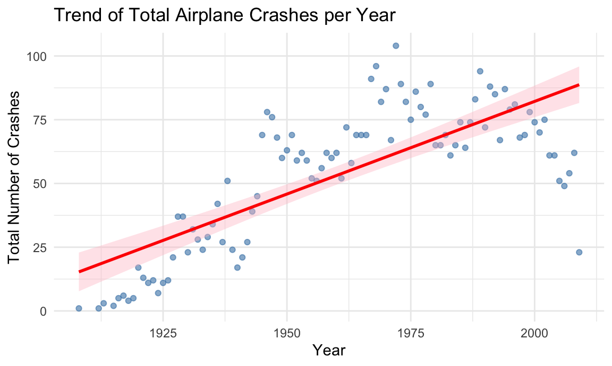

Statistical Analysis
This file contains ANOVA and respective post-hoc tests of the dataset.
Load & Clean Data
## Rows: 5268 Columns: 13
## ── Column specification ─────────────────────────────────────────────────────────
## Delimiter: ","
## chr (10): Date, Time, Location, Operator, Flight #, Route, Type, Registratio...
## dbl (3): Aboard, Fatalities, Ground
##
## ℹ Use `spec()` to retrieve the full column specification for this data.
## ℹ Specify the column types or set `show_col_types = FALSE` to quiet this message.airplane_df = airplane_df |>
mutate(
decade = floor(year / 10) * 10,
decade = paste0(decade, "s")
) |>
select(date, year, decade, month, month_name, everything()) Are total airplane crashes evenly distributed across the four seasons?
airplane_season = airplane_df |>
filter(aboard > 0, !is.na(fatalities)) |>
mutate(
survival_rate = (aboard - fatalities) / aboard,
month_num = month(date),
season = case_when(
month_num %in% c(12, 1, 2) ~ "Winter",
month_num %in% c(3, 4, 5) ~ "Spring",
month_num %in% c(6, 7, 8) ~ "Summer",
month_num %in% c(9, 10, 11) ~ "Fall"
)
) |>
filter(!is.na(season)) |>
mutate(season = fct_relevel(season, "Spring", "Summer", "Fall", "Winter"))
season_summary = airplane_season |>
# ---- seasonal crash counts ----
count(season, name = "n") |>
# ---- compute expected + chisq ----
mutate(
expected = mean(n),
chisq = list(chisq.test(n)),
residual = n - expected,
std_resid = (n - expected) / sqrt(expected)
)|> print()## # A tibble: 4 × 6
## season n expected chisq residual std_resid
## <fct> <int> <dbl> <list> <dbl> <dbl>
## 1 Spring 1194 1308. <htest> -114. -3.17
## 2 Summer 1283 1308. <htest> -25.5 -0.705
## 3 Fall 1357 1308. <htest> 48.5 1.34
## 4 Winter 1400 1308. <htest> 91.5 2.53# extract p-value
chisq_p = season_summary$chisq[[1]]$p.value
chisq_p## [1] 0.0003135229# ---- plot ----
season_summary |>
ggplot(aes(season, n)) +
geom_col(fill = "steelblue") +
geom_hline(aes(yintercept = expected),
linetype = "dashed", size = 1) +
labs(
title = "Total Crashes by Season",
subtitle = paste("Chi-Square p-value =", format.pval(chisq_p)),
x = "Season",
y = "Total Number of Crashes"
) +
theme_minimal() +
theme(legend.position = "none")
Does the average yearly crashes differ across four seasons?
cat("=== ANOVA result ===\n")## === ANOVA result ===airplane_season |>
# Count crashes per year/season combo
count(year, season, name = "crash_count")|>
# ANOVA
aov(crash_count ~ season, data = _) |>
summary()## Df Sum Sq Mean Sq F value Pr(>F)
## season 3 433 144.25 2.815 0.0391 *
## Residuals 370 18963 51.25
## ---
## Signif. codes: 0 '***' 0.001 '**' 0.01 '*' 0.05 '.' 0.1 ' ' 1# ---- plot ----
airplane_season |>
count(year, season, name = "crash_count")|>
group_by(season) |>
summarise(
mean_crashes = mean(crash_count),
se = sd(crash_count) / sqrt(n())
) |>
ggplot(aes(x = season, y = mean_crashes)) +
geom_col(fill = "steelblue",show.legend = FALSE) +
geom_errorbar(aes(ymin = mean_crashes - se,
ymax = mean_crashes + se),
width = 0.15) +
labs(
title = "Average Yearly Airplane Crashes by Season",
x = "Season",
y = "Average Crash Count"
) +
theme_minimal()
What about seasonale differences of fatality rate?
No significant evidence suggest there’s seasonal differences of fatality rate
cat("=== ANOVA result ===\n")## === ANOVA result ===airplane_season|>
##ANOVA
aov(survival_rate ~ season, data = _ )|>
summary()## Df Sum Sq Mean Sq F value Pr(>F)
## season 3 0.5 0.17340 1.942 0.121
## Residuals 5230 467.1 0.08931Is the fatality rate lower over the years?
Statistical evidence confirms that airplane has become safer over time regarding survivability. linear regression analysis reveals a statistically significant negative correlation between year and fatality rate (p < 0.001). However, the low R-squared value (0.004) indicates that while the downward trend is consistent, the outcome of any individual crash is heavily influenced by situational factors other than just the time period.
airplane_df |>
filter(aboard > 0, !is.na(fatalities)) |>
mutate(fatality_rate = fatalities / aboard) |>
group_by(year) |>
summarise(mean_fatality_rate = mean(fatality_rate)) |>
ggplot(aes(x = year, y = mean_fatality_rate)) +
geom_point(color = "steelblue", alpha = 0.6) +
geom_smooth(method = "lm", color = "red", fill = "pink",se = TRUE) +
labs(
title = "Trend in Airplane Fatality Rate Over Time",,
x = "Year",
y = "Average Fatality Rate"
) +
theme_minimal()## `geom_smooth()` using formula = 'y ~ x'
airplane_df|>
filter(aboard > 0, !is.na(fatalities)) |>
## Calculate fatality rate
mutate(fatality_rate = fatalities / aboard) |>
## for individual event
lm(fatality_rate ~ year, data = _)|> summary()##
## Call:
## lm(formula = fatality_rate ~ year, data = mutate(filter(airplane_df,
## aboard > 0, !is.na(fatalities)), fatality_rate = fatalities/aboard))
##
## Residuals:
## Min 1Q Median 3Q Max
## -0.87369 -0.03091 0.15034 0.17330 0.19754
##
## Coefficients:
## Estimate Std. Error t value Pr(>|t|)
## (Intercept) 2.5264723 0.3639697 6.941 4.35e-12 ***
## year -0.0008581 0.0001846 -4.648 3.43e-06 ***
## ---
## Signif. codes: 0 '***' 0.001 '**' 0.01 '*' 0.05 '.' 0.1 ' ' 1
##
## Residual standard error: 0.2983 on 5232 degrees of freedom
## Multiple R-squared: 0.004113, Adjusted R-squared: 0.003922
## F-statistic: 21.61 on 1 and 5232 DF, p-value: 3.428e-06Is the number of crash event higher or lower over the years?
crashes_by_year = airplane_df |>
count(year, name = "total_crashes")
ggplot(crashes_by_year, aes(x = year, y = total_crashes)) +
geom_point(color = "steelblue", alpha = 0.6) +
geom_smooth(method = "lm", color = "red", fill = "pink") +
labs(
title = "Trend of Total Airplane Crashes per Year",
x = "Year",
y = "Total Number of Crashes"
) +
theme_minimal()## `geom_smooth()` using formula = 'y ~ x'
fit_count <- lm(total_crashes ~ year, data = crashes_by_year)
summary(fit_count)##
## Call:
## lm(formula = total_crashes ~ year, data = crashes_by_year)
##
## Residuals:
## Min 1Q Median 3Q Max
## -65.727 -12.685 -0.066 11.661 42.168
##
## Coefficients:
## Estimate Std. Error t value Pr(>|t|)
## (Intercept) -1.372e+03 1.258e+02 -10.90 <2e-16 ***
## year 7.269e-01 6.415e-02 11.33 <2e-16 ***
## ---
## Signif. codes: 0 '***' 0.001 '**' 0.01 '*' 0.05 '.' 0.1 ' ' 1
##
## Residual standard error: 18.03 on 96 degrees of freedom
## Multiple R-squared: 0.5722, Adjusted R-squared: 0.5677
## F-statistic: 128.4 on 1 and 96 DF, p-value: < 2.2e-16Cross validation : linear vs pwl vs smooth
crashes_by_year = airplane_df |>
count(year, name = "total_crashes")|>
mutate(year_cp1990= (year > 1990) * (year - 1990))
set.seed(1)
cv_df = crossv_mc(crashes_by_year, 100)
linear_mod = lm(total_crashes ~ year, data = crashes_by_year)
pwl_mod = lm(total_crashes ~ year + year_cp1990, data = crashes_by_year)
smooth_mod = gam(total_crashes ~ s(year), data = crashes_by_year)
## compare 3 models
## visually smooth mod is better
crashes_by_year |>
gather_predictions(linear_mod, pwl_mod, smooth_mod) |>
mutate(model = fct_inorder(model)) |>
ggplot(aes(x = year, y = total_crashes)) +
geom_point(alpha = .5) +
geom_line(aes(y = pred), color = "red") +
facet_grid(~model)
cv_df <- cv_df |>
mutate(
train = map(train, as_tibble),
test = map(test, as_tibble)
) |>
mutate(
linear_mod = map(train, \(df) lm(total_crashes ~ year, data = df)),
pwl_mod = map(train, \(df) lm(total_crashes ~ year + year_cp1990, data = df)),
smooth_mod = map(train, \(df) gam(total_crashes ~ s(year), data = df))
) |>
mutate(
# calculate RMSE
rmse_linear = map2_dbl(linear_mod, test, \(mod, df) rmse(model = mod, data = df)),
rmse_pwl = map2_dbl(pwl_mod, test, \(mod, df) rmse(model = mod, data = df)),
rmse_smooth = map2_dbl(smooth_mod, test, \(mod, df) rmse(model = mod, data = df))
)
cv_df |>
select(starts_with("rmse")) |>
pivot_longer(
everything(),
names_to = "model",
values_to = "rmse",
names_prefix = "rmse_"
) |>
mutate(model = fct_inorder(model)) |>
ggplot(aes(x = model, y = rmse)) +
geom_violin()
summary(smooth_mod)##
## Family: gaussian
## Link function: identity
##
## Formula:
## total_crashes ~ s(year)
##
## Parametric coefficients:
## Estimate Std. Error t value Pr(>|t|)
## (Intercept) 53.429 1.037 51.5 <2e-16 ***
## ---
## Signif. codes: 0 '***' 0.001 '**' 0.01 '*' 0.05 '.' 0.1 ' ' 1
##
## Approximate significance of smooth terms:
## edf Ref.df F p-value
## s(year) 8.399 8.9 67.13 <2e-16 ***
## ---
## Signif. codes: 0 '***' 0.001 '**' 0.01 '*' 0.05 '.' 0.1 ' ' 1
##
## R-sq.(adj) = 0.86 Deviance explained = 87.2%
## GCV = 116.67 Scale est. = 105.48 n = 98